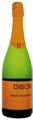
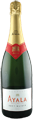
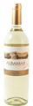
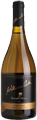
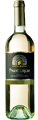
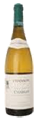

Hele menuen
Brunch
|
Bergs brunch platte (hver dag kl. 11.00 - 14.00)
Røræg med bacon, brunchpølser, tunmousse, pandekager, yoghurt med müsli, brieost, skæreost, chorizo, skinke, marmelade, frisk frugt, rugbrød, hjemmebagt brød,
kaffe/the eller juice.
|
129,-- |
|
Weekend brunch (lørdag - søndag kl. 11.00 - 14.00)
Røræg med sprød bacon, brunch pølser, stegte kartofler, 3 slags pålæg, drænet yoghurt med marinerede bær, hjemmerøget laks, 2 slags modne oste, 2 slags marmelade, nutella, amerikanske pandekager med sirup, friskbagte
kanelsnegle, frisk frugt, friskbagt rugbrød og franskbrød,
æble og appelsin juice, almindelig kaffe og te.
|
178,- |
|
Ønskes egen buffet kan dette imødekommes mod et gebyr på 1500,-.
Ved selskaber på min. 20 pers. skal der betale depositum på 1000,- endeligt antal 8 dage før. Efter denne tidsfrist betales for antal reserverede.
|
Morgenmad
|
Kylling/bacon omelet
Kylling, sprødstegt bacon, cheddarost, hertil salat og brød.
|
79,- |
|
Skinke omelet
Skinke, cheddarost, hertil salat og brød.
|
79,-
|
|
Pandekager
3 pandekager med yoghurt med müsli og frisk frugt.
|
59,- |
Lette retter
|
Hvidløgsbrød
Ristet brød med hvidløg og friske tomater, ost, pesto og salat.
|
59,- |
|
Nachos supreme
Ristet kylling, salsa, cheddarost, creme fraiche og guacamole.
|
95,- |
|
Nachos normales
Salsa, cheddarost og creme fraiche
|
85,- |
|
Dagens suppe
Spørg tjeneren.
|
89,- |
|
|
Pasta retter
|
Pastapenne med kylling
Penne med kyllingestrimler, grøntsager, karry og fløde.
|
119,- |
|
Pastapenne med oksekød
Penne med oksekød, grøntsager, tomatsauce og fløde.
|
129,- |
|
Spaghetti bolognese
Speghetti med kødsauce samt parmesanost
Spaghetti Carbonara
Spaghetti med bacon, fløde, æg samt parmesan
|
119,-
119,- |
Salater
|
Reje salat
Årstidens salater med rejer, avocado og limedressing.
|
89,- |
|
Kylling salat
Årstidens salater, grillet kyllingbryst og pestodressing.
|
89,- |
|
Lakse salat
Årstidens salater, laks og limedressing.
|
89,- |
|
Tun salat
Årstidens salater med tunmousse og limedressing.
Cæsar salat
Romainesalat, grillede kylling, croutoner, parmesan ost og dressing
|
89,-
89,- |
Alle salater serveres med hjemmebagt brød.
Sandwiches
|
Klassisk Club sandwich
Grillet kyllingebryst, bacon, karrydressing, toastbrød, håndskårne kartofler
|
125,- |
|
Tun sandwich
Tunmousse, salat, limedressing og mørkt landstykkebrød.
|
99,- |
|
Lakse sandwich
Koldrøget laks, salat, limedressing og mørkt landstykkebrød.
|
99,- |
|
Vegetar sandwich
Grillede grøntsager, salat, husets dressing samt mørkt landstykkebrød.
|
99,- |
|
Chefen's sandwich
Grillet oksefilet, salat, pestodressing, mørkt landstykkebrød og håndskårne kartofler.
|
125,- |
Berg's Burger
|
Berg's burger
Hakket oksebøf (230gr.), salat, tomat, agurk, bacon, cheddarost, burger bolle og håndskårne kartofler
|
129,- |
|
Berg's spicyburger
Hakket oksebøf (230 gr.), tomat, agurk, bacon, cheddarost, jalapenos, syltede chili, salsa, burger bolle og håndskårne kartofler.
|
139,- |
|
Berg's steak burger
Oksesteak (250gr.), salat, husets dressing, tomat, agurk, bacon, cheddarost, burger bolle og håndskårne kartofler
Berg's steak spicy burger
Oksesteak (250 gr.) salat, husets dressing, tomat, agurk, bacon, cheddarost, jalapenos, syltede chili, salsa, burger bolle og håndskårne kartofler.
Berg's kylling burger
Grillet kyllingebryst (ca. 250 gr.), tomat, agurk, bacon, cheddarost, burger bolle samt håndskårne kartofler.
|
139,-
149,-
125,- |
Alle burgere serveres med håndskårne kartofler.
Forretter
|
Dagens suppe
Spørg tjeneren.
|
89,- |
|
Koldrøget laks
Med emulsion af citron og olivenolie samt salat.
|
95,- |
|
Rejer
Med pink sauce samt salat.
Lakse salat
Årstidens salater med laks og limedressing
|
89,- 89,- |
|
Okse carpaccio
Cæsar salat |
95,-
89,- |
|
Bruschetta
Reje salat |
89,-
89,- |
Steaks
Ribeye / Entrecote steak 250 gr. (Australian, Clare Valley Signature) |
295,- |
| Ribeyesteak / Entrecote steak 400 gr. (Australian, Clare Valley Signature) | 395,- |
| Tornados steak 250 gr. (Syd Amerikanske oksemørbrad) | 295,- |
| Tornados steak 400 gr. (Syd Amerikanske oksemørbrad) | 395,- |
| T-bone Steak 400 gr. (Syd Amerikanske) | 355,- |
| Peberbøf af oksemørbrad 250 gr. (Syd Amerikanske oksemørbrad) | 325,- |
| Peberbøf af oksemørbrad 400 gr. (Syd Amerikanske oksemørbrad) | 425,- |
| NEW YOURK STRIP 250 gr. (Syd Amerikansk) | 275,- |
| Kylling "a la diablo" 250 gr. | 259,- |
| Laksesteak 250 gr. | 215,- |
Diverse retter
|
Quesadilla
Pandestegt tortilla fyldt med kylling, cheddarost,
guacamole, salsa, creme fraiche og salat.
|
129,- |
|
Chilli con carne
Creme fraiche, tortilla chips og brød.
|
129,- |
|
Lasagne
Serveres med salat.
|
129,- |
|
Tapas tallerken
Røget laks, salsamarienerede tigerrejer, 2 slags ost, 2 slags italiensk pålæg, oliven, chorizo pølser, kylling steak, rejer, salat med brød og smør.
|
129,- |
|
Stjerneskud
Friterede og dampede rødspættefilet, rejer, asparges og citron.
|
129,- |
|
Fiskefilet
2 stk friterede fiskefilet, pommes frites, salat, remulade og ketchup.
|
129,- .................. |
Desserter
|
Tiramisu
Med frisk frugt.
|
85,- |
|
Creme brulee
Med frisk frugt
|
85,- |
|
Chokolade fondant
Med italiensk vanilje is |
85,- |
|
Panna Cotta Med honning |
75,- |
|
Isanretning Med flødeskum og frugt |
75,- |
|
Pandekage Med is og frisk frugt |
55,- |
| Italiensk chokolade is | 75,- |
Kolde drikke
| Iskaffe | 49,- |
| Lille sodavand (30 cl) | 28,- |
| Stor sodavand (50 cl.) | 38,- |
|
Flaske sodavand |
29,- |
|
San Pellegrino med/uden brus |
39,- |
|
Diverse Søbogaard most
Hyldeblomst, solbær, hindbær, æblemost, blåbær,
jordbær, tranebær, æble/solbær.
|
29,- |
| Kold chokolade 50 cl | 39,- |
|
Lille friskpresset juice (30 cl.) |
|
| Stor friskpresset juice (50 cl.) | 69,- |
| Hjemmelavet lemonade | 39,- |
| Hjemmelavet Iste | 39,- |
| Jordbær smoothie | 45,- |
| Isvand glas/kande | 10,- / 25,- |
Vi har fri vand i baren, hvor der løbende bliver fyldt op med frisk isvand.
Varme drikke
| Filter the | 29,- |
| Kop kaffe eller pose the | 24,- |
| Espresso | 26,- |
| Double espresso | 39,- |
| Cafe latte | 39,- |
| Double cafe latte | 49,- |
| Cappuccino | 38,- |
| Macchiato | 29,- |
| Latte Macchiato | 39,- |
| Hjemmelavet chokolade med flødeskum | 49,- |
| Hjemmelavet chokolade med vaniljeis | 51,- |
| Stempelkaffe lille | 38,- |
| Stempelkaffe stor | 63,- |
| Irish coffee med 3 cl. Tullamore Dew | 58,- |
| Double irish coffee | 81,- |
| Chai latte med tiger spice, toucan mango, elephant vanilla | 42,- |
Øl
|
Lille fadøl (25 cl.)
Stor fadøl (50 cl.)
Lille Grimbergen (33 cl.)
Stor Grimbergen (50 cl.)
Lille Hoegaarden (25 cl.)
Stor Hoegaarden (50 cl.)
Carlsberg Nordic ( 33 cl. alkoholfri, 0,05% alkohol)
|
29,-
49,-
39,-
59,-
39,-
59,-
39,-
|
| Sol (Mexicansk øl) | 39,- |
| Corona (Mexicansk øl) | 39,- |
| Singha (Thailansk øl) | 39,- |
| Tuborg guld (dåse, 50 cl.) | 49,- |
| Carlsberg (div. speciel øl 33 cl., dåse) | 29,- |
| Grøn tuborg (33 cl. dåse/flaske) | 29,- |
Mousserende
|
Cava Brut, Masia Dibon - Spanien
Lavet på ”champagne-metoden”, dvs. 2 gæringen foregår i flaske. Den er lavet på de lokale druer, macabeo, xerello og perellada. Det er en meget elegant cava.
Rank og frisk, med en livgivende frugtsyre og en flot mousse. Perfekt til aperitif, til skaldyr.
”Best Buy” og 88 point i WineEnthusiast Magazine
glas 55,- flaske 255,-
|
 |
|
Ayala Champagne Brut - Frankrig
Brut Majeur, er sammensat af flere årgange af husets kræsne kældermester.
En afstemt blanding af druerne: 45% Pinot Noir, 30% Chardonnay og 25% Pinot Meunier.
Duften er rig og kompleks, smagen er livlig, åben, med en cremet fylde og fløjlsblød.
glas 88,- flaske 475,-
|
 |
Hvidvin - oversøiske
|
Sauvignon Blanc ALBAMAR, William Cole - Chile
William Cole ligger i det kølige Casablanca udmod Stillehavets kyst i Chile. Vinen er tør, frisk og lækker aromatisk med mindelser om sommer og hyldeblomst.
flaske 228,-
|
 |
|
Chardonnay Colombine Reserve, William Cole - Chile
Denne vin har lagret 6 måneder på egefade, som giver vinen en stor fylde og en del fedme.
Desuden giver lagring på fade mere duft og smag til vinen. Vinen er frisk, fyldig og mineralsk i en perfekt harmoni. Lang eftersmag. God ledsager til laks, hummer, eller lette kødretter.
flaske 275,-
|
 |
Hvidvin – Europa
|
Pinot Grigio, Corte Majoli - Italien
Pinot Grigio hedder den i Italien, i andre lande er den også kendt som Pinot Gris.
En fyldig hvidvin af slagsen. Duften er let krydret, smagen ret kraftig af en hvidvin,
med masser af tyngde og cremet fylde. Eftersmagen hænger ved rigtig længe.
flaske 259,-
|
 |
|
Chablis, Maison Chanson - Frankrig
En af denne verdens mest berømte hvide vine er Chablis, som regnes for et underområde til Bourgogne. Det er samme drue Chardonnay som også benyttes til de hvide bourgogner.
Chablis er udelukkende hvide vine og er kendetegnede ved deres friskhed, er meget tør, lidt fintet i duften og ikke for tung i munden.
Den er meget sprød og en vin, som fordeler sig blidt i munden. Klassisk Chablis.
flaske 425,-
|
 |